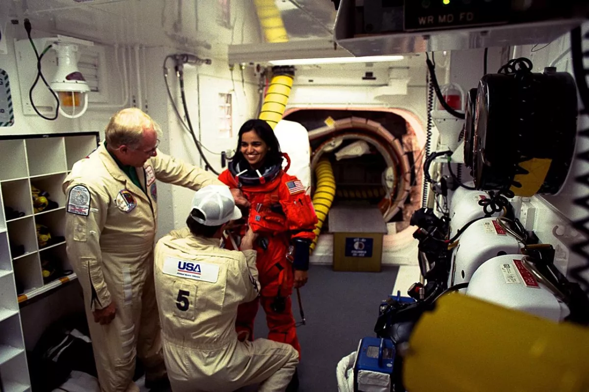

Who is she?
Kalpana Chawla became the first Indian-born woman to go to space in 1997. Six years later, on February 1, 2003, Chawla died when the space shuttle Columbia broke up on re-entry into Earth's atmosphere, killing all seven astronauts on board.
Chawla's legacy has lived on, however. In particular, her talent and hard work have inspired young people in India and around Earth to consider careers in spaceflight. Chawla felt passionately about providing science education opportunities for young girls in India, and during her time as an astronaut, NASA invited Chawla's secondary school to take part in their Summer Space Experience Program.In 1994, Chawla was selected as an astronaut candidate. After a year of training, she became a crew representative for the Astronaut Office EVA/Robotics and Computer Branches, where she worked with Robotic Situational Awareness Displays.

Early life
Born in Karnal, India, on March 17, 1962, to parents Banarasi Lal Chawla and Sanjyothi Chawla, Kalpana Chawla was the youngest of four children.
Until she started school, Chawla hadn't been formally named. Her parents called her Montu, but Chawla picked her own name from a selection when she entered education. The name Kalpana means "idea" or "imagination." Her full name is pronounced CULL-pah-na CHAU-la, though she often went by the nickname K.C.
As a child, Chawla developed an interest in flying after first seeing a plane at around the age of three. She spent days with her father visiting her local flying club with her father and showed an interest in aviation while at school.
Chawla obtained a degree in aeronautical engineering from Punjab Engineering College. Chawla began working at NASA's Ames Research Center the same year, working on powered-lift computational fluid dynamics. In particular, her work focused on understanding how air flows around an aircraft during flight and incorporating computers into the work.
Becoming an astronaut
In 1994, Chawla was selected as an astronaut candidate. After a year of training, she became a crew representative for the Astronaut Office EVA/Robotics and Computer Branches, where she worked with Robotic Situational Awareness Displays and tested software for the space shuttles.
Chawla felt passionately about providing science education opportunities for young girls in India, and during her time as an astronaut, NASA invited Chawla's secondary school to take part in their Summer Space Experience Program. Each year from 1998, the school sent two girls to the Foundation for International Space Education's United Space School in Houston and Chawla would invite them into her home for an Indian dinner.
Chawla's first flight came in November 1997, aboard the space shuttle Columbia on flight STS-87. The shuttle made 252 orbits of the Earth in just over two weeks. Chawla was a mission specialist and prime robotic arm operator for the flight; the other astronauts on board were Kevin Kregel, Steven Linsey, Winston Scott, Takao Doi and Leonid Kadenyuk.
The shuttle carried a number of experiments, including projects studying plant reproduction in microgravity and how materials behave in space.
The columbia disaster
In 2000, Chawla was selected for her second voyage into space, to serve as a mission specialist on STS-107. The mission was delayed several times before finally launching on Jan. 16, 2003.
In particular, the flight carried a large pressurized chamber called the Spacehab research module inside the shuttle's payload bay. The experiments completed in the Spacehab module focused on biological and health sciences.
During the 16-day flight, the crew completed more than 80 experiments, working a strenuous shift schedule to ensure that the research never stopped, according to NASA. Among other work, the STS-107 crew tested technology that NASA wanted to recycle water on the young International Space Station. Experiments developed by elementary school students from around the world analyzed how insects and fish respond to spaceflight; another suite of experiments studied the sun.